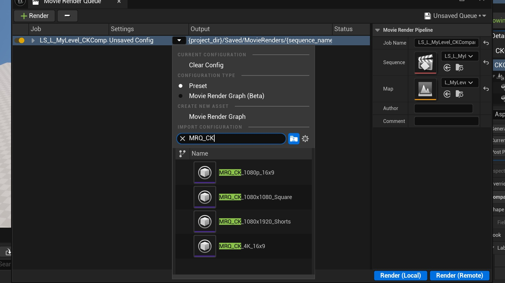

Rendering
Movie Render Queue
- Run Fit Sequence after your last change (see Sequencer).
- Open Window > Cinematics > Movie Render Queue, click Render and add your Level Sequence.
- Pick a preset from
Plugins > Comparison Kit > Render:
| Preset | Output |
|---|---|
MRQ_CK_1080p_16x9 |
1920 x 1080, landscape |
MRQ_CK_1080x1920_Shorts |
1080 x 1920, portrait |
MRQ_CK_1080x1080_Square |
1080 x 1080 |
MRQ_CK_4K_16x9 |
3840 x 2160, landscape |

The preset's resolution has to match the actor's Aspect: a 9:16 preset with a 16:9 actor crops the picture. For a vertical Short set Aspect to 9:16 (Shorts) (or open a _Shorts demo map) and use the Shorts preset.
The presets render at the sequence's frame rate (60 fps in the demos). For 30 fps change the sequence's Display Rate and run Fit Sequence again.
16:9 and 9:16 from the same data
- Render the 16:9 version with Aspect = 16:9 and the 16:9 preset.
- Set Aspect to 9:16 (Shorts), press Apply Shorts Timing (ranked rows) or set your own timing, press Fit Sequence, and render with the Shorts preset.
- Keep End Question and Loop Ending for Shorts endings.
Recommended settings
- Render without the editor for long or heavy sequences. Run
UnrealEditor-Cmdwith your project, the map,-game -MoviePipelineConfig=<queue asset> -RenderOffscreen. This needs less GPU memory than rendering from Play-In-Editor. - In the render preset, open Game Overrides and set Texture Streaming to Fully Load Used Textures. The default loads every texture at full size and the streaming pool setting has no effect in that mode. This setting measured the lowest GPU memory use of the options tried, with the same picture.
- Keep Lumen and Virtual Shadow Maps on (see Requirements on the home page).
- Check Data Status on the actor before you render: it names timing problems such as cuts faster than three per second.
- Lock the exposure: the kit's looks use manual Exposure Compensation (Comparison | Grade) so brightness does not drift between shots.
Voice-over and subtitles
Assign Voiceover and Subtitle File (an .srt file, timed to the video clock) under Comparison | Brand. Fit Sequence puts the voice-over on an audio track at 0; Movie Render Queue renders it when you add a .wav output.